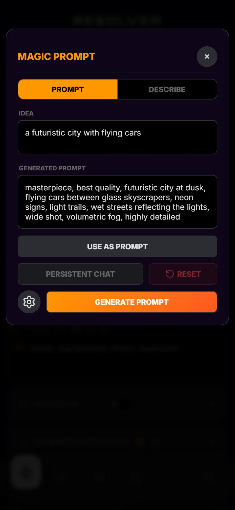
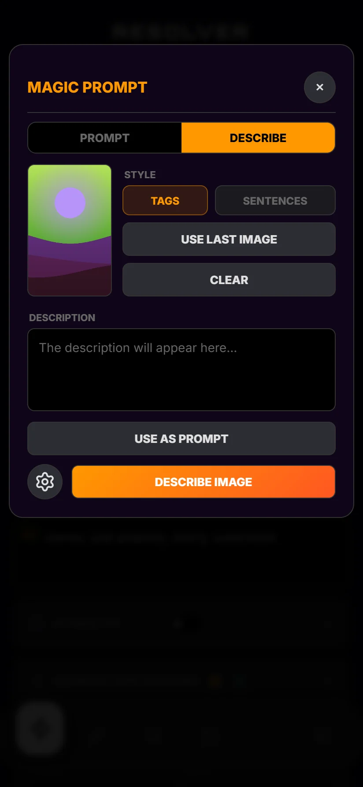
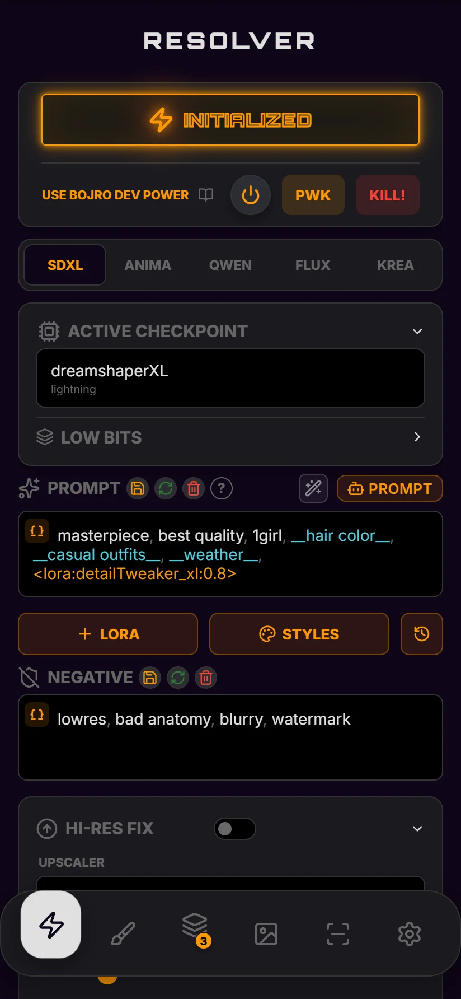

Docs / Create
Magic Prompt
A language model running on your PC (in LM Studio or Ollama) helps with the words: it turns a short idea into a full prompt, describes a picture, writes wildcard options, and picks wildcards that go together.
Setting it up
- Run a model server on your PCLM Studio (its server on port
1234) or Ollama (port11434): anything with the OpenAI-style/v1API. Let it accept connections from the network (in LM Studio: Serve on Local Network). - Load a modelA small instruction model is plenty for prompts (3–8B). For Describe, a vision model that can read images (for example Qwen2.5-VL or Gemma 3).
- Set the LLM portConfig → Connection → Local ports → LLM. It uses the same IP address as Forge.
- LinkIn the Magic Prompt window, open and tap LINK: the list fills with your server’s models. Pick one.
A language model uses VRAM too. If Forge runs out of memory, use a smaller model, or keep Unload after picking on for Scene optimization.
PROMPT: from an idea to a prompt
Tap PROMPT on a tab’s Prompt box.
- Idea
- A few words: “a futuristic city with flying cars”.
- GENERATE PROMPT
- The model writes a full prompt into Generated Prompt, in the style of that tab’s model.
- USE AS PROMPT
- Puts it in the tab’s prompt box.
- Persistent Chat
- Keeps the conversation: your next idea refines the last prompt (the button becomes ITERATE). RESET starts over.
- Settings
- LLM CONNECTION with LINK and the model, and the system prompt: the instructions given to the model, one for each model tab, so SDXL gets tags and Flux gets sentences. Edit it to change the style.

DESCRIBE: from a picture to a prompt
The DESCRIBE tab reads an image with a vision model.
- The image
- Tap the box to pick one, or USE LAST IMAGE for your latest result. CLEAR removes it.
- Style
- TAGS (for SDXL / Anima) or SENTENCES (for Flux, Krea, Qwen).
- DESCRIBE IMAGE
- Writes the Description; USE AS PROMPT sends it to the tab.
- Recent
- The last few descriptions, to use again.
- DESCRIBE MODEL
- Its own model, as it needs one that can see. A model that can’t is flagged: “This model can’t read images.”

To read the settings an image was made with (rather than describe it), use Analyze.
Writing wildcard options
In the wildcard editor, the Magic Prompt row writes options for you: choose TAGS or SCENES, add an optional hint (“winter”, “fantasy”), and tap GENERATE. Its sets the WILDCARD MODEL.
Scene optimization
Random picks don’t always go together: a beach with snow boots, a library at a party. With a prompt that has wildcards, a wand appears beside PROMPT on SDXL and Anima. With it on, before each job the model chooses among the options the wildcard engine offers, so the outfit, place, pose and lighting of each image suit each other and your prompt.
- Conditions and rules still hold: the model only chooses from options that are allowed.
- If anything fails (no server, a slow answer), the usual random picks are used. Nothing is lost.
- When the prompt doesn’t say how many people, it can also add one (“1girl, solo”…).
Its options in Config → Magic Prompt:
- Scene model
- Same as Magic Prompt, or another.
- Unload after pickingon
- Frees the model’s memory so Forge has the VRAM for the picture.
- Recolor to matchoff
- May swap a few colours in the picks so they go together; Backgrounds too includes places, lighting and props.
- Drop tags that don’t fitoff
- May leave out picked tags that clash (never the character’s).
- Add negativesoff
- Adds a few negative tags of its own for each image.

Showing and hiding it
Config → Magic Prompt → Show Magic Prompt hides every Magic Prompt button at once. Under it, Prompt, Describe, Wildcard generate and Scene optimization show or hide each part. See Config.